§9.1 二重积分
一、引例
求曲顶柱体的体积
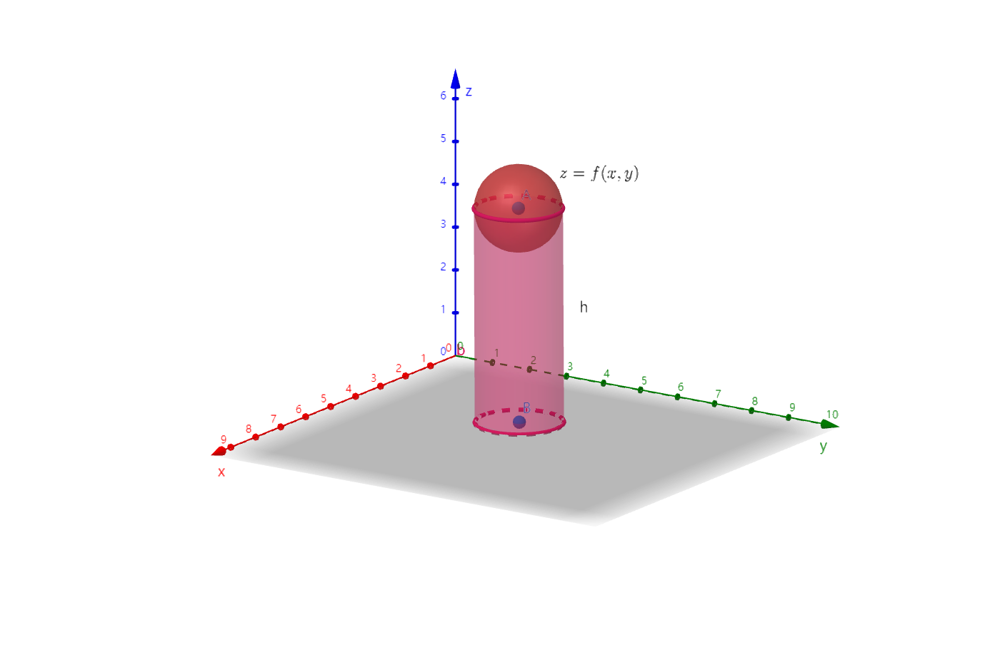
- 分割
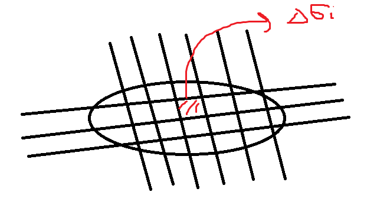
- 代替 V小曲顶≈V小柱=f(ξi,ηi)Δσi
- 求和 i=1∑nf(ξi,ηi)Δσi≈V曲顶
- 取极限 λ→0limi=1∑nf(ξi,ηi)Δσi=V曲顶（λ=max{Δσi}）
二、定义
f(x,y) 在有界闭区域D上：
- 任意划分D：Δσ1、Δσ2、……、Δσn
- 任意取点 (ξi,ηi)∈Δσi
若 i=1∑nf(ξi,ηi)Δσi 存在，则称该极限为 f(x,y) 在 D 上的二重积分【其中 λ=max{d1,d2,⋯,dn}】。记为
∬Df(x,y)dσ=∬Df(x,y)dxdy
其中
- D 为积分区域
- f(x,y) 为被积函数
- dσ 为面积元素/面元
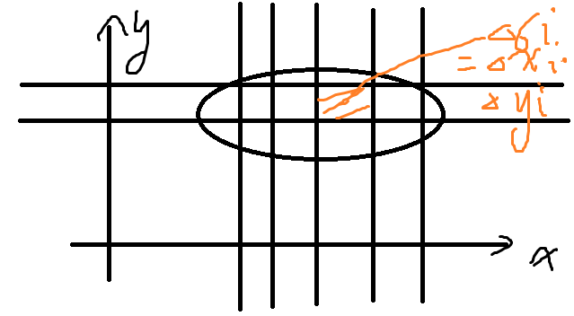
- f(x,y)≥0 时，其几何意义为圆顶柱体体积
- f(x,y)=1 时，∬D1⋅dσ=σ，为积分区域面积
f(x,y) 存在 ⇒ 二重积分存在
三、二重积分的性质
- 线性性质
∬D[αf(x,y)+βg(x,y)]dσ=α∬Df(x,y)dσ+β∬Dg(x,y)dσ
- 区域可加性
∬Df(x,y)dσ=∬D1f(x,y)dσ+∬D2f(x,y)dσ，其中D=D1+D2
- 保序性
- f(x,y)≥0⇒∬Df(x,y)dσ
- f(x,y)≥g(x,y)⇒∬Df(x,y)dσ≥∬Dg(x,y)dσ
- −∣f(x,y)∣≤f(x,y)≤∣f(x,y)∣⇒−∬D∣f(x,y)∣dσ≤∬Df(x,y)dσ≤∬D∣f(x,y)∣dσ
- ∣∬Df(x,y)dσ∣≤∬D∣f(x,y)∣dσ
- 估值定理
- f(x,y) 是有界闭区域D上的连续函数，m≤f(x,y)≤M，则 mσ≤∬Df(x,y)dσ≤Mσ
- 中值定理
- m≤σ∬Df(x,y)dσ≤M，存在 (ξ,η)∈D，f(ξ,η)=σ∬Df(x,y)dσ。
- ∬Df(x,y)dσ=σ⋅f(ξ,η)【曲顶柱体≈某柱体】
- 对称性
- 若D关于x轴对称，令 D1 为上半部分
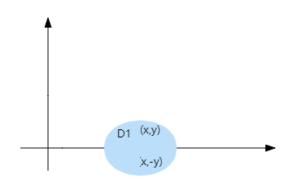
∬Df(x,y)dxdy={2∬D1f(x,y)dxdy0f(x,y)=f(x,−y)f(x,y)=−f(x,−y)
- 若D关于y轴对称，令 D1 为左半部分
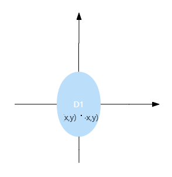
∬Df(x,y)dxdy={2∬D1f(x,y)dxdy0f(x,y)=f(−x,y)f(x,y)=−f(−x,y)
- 若D关于原点对称，令 D1 为第一象限部分
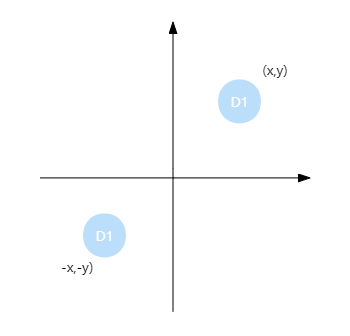
∬Df(x,y)dσ={2∬D1f(x,y)dσ0f(x,y)=f(−x,−y)f(x,y)=−f(−x,−y)
- 若D关于y=x对称，则 ∬Df(x,y)dσ=∬Df(y,x)dσ
四、例题
例0. 面积定义
-
求 ∬DR2−x2−y2dxdy，其中 D:x2+y2≤R2
解：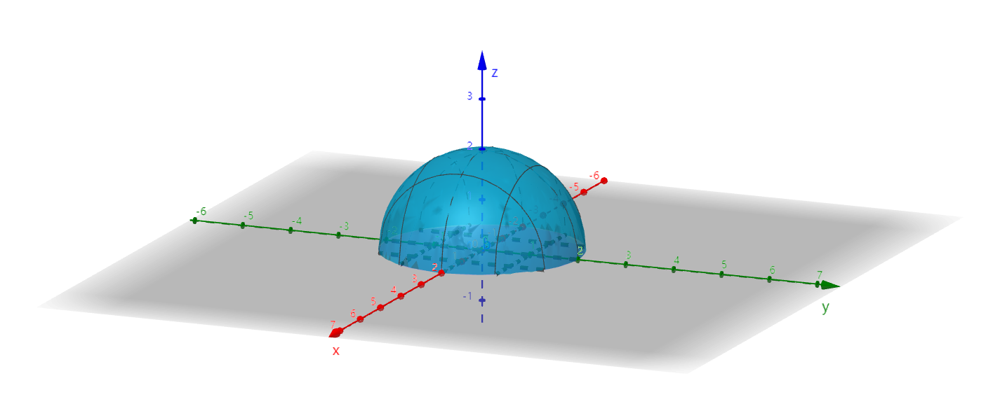
z=R2−x2−y2，上半球面
∬DR2−x2−y2dxdy=21V球=32πR3
-
求 ∬Dx2+y2dxdy，其中 D:x2+y2≤4
解：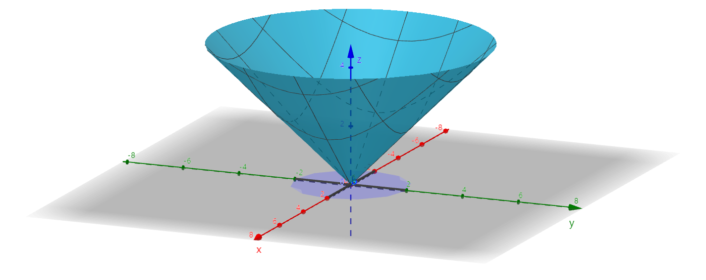
z=x2+y2，锥面
I=V柱−V锥=S1h−31S2h(S1=S2±4π)=32⋅4π⋅2=316π
例1. 对称性
- D:x2+y2≤1
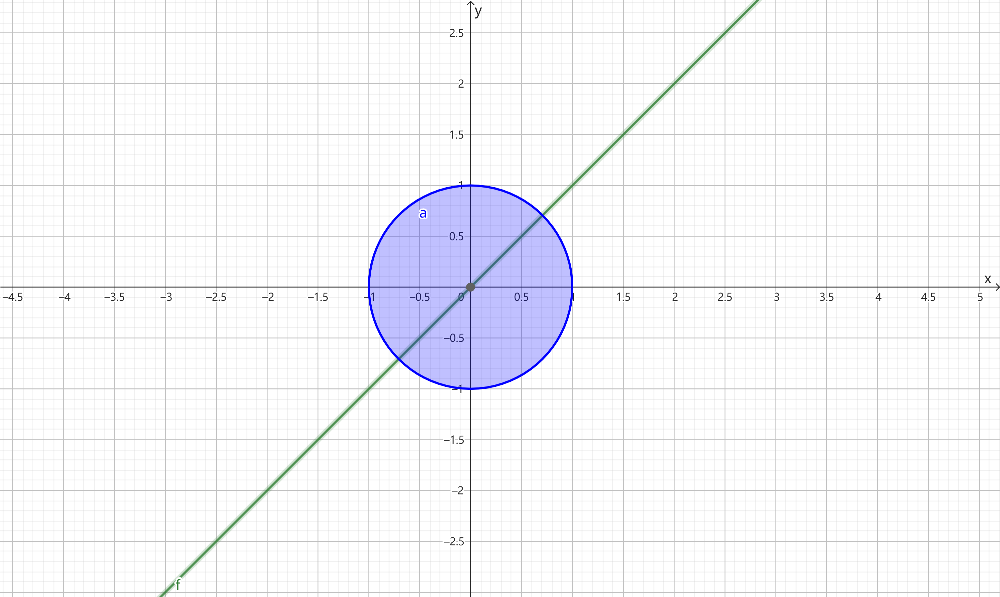
∬Dx2dxdy=∬Dy2dxdy=21(∬Dx2dxdy+∬Dy2dxdy)=21∬D(x2+y2)dxdy
-
证明 ∬D(x2+x3y4)dσ=4∬D1x2dσ，其中 D:∣x∣+∣y∣≤1，D1 为 D 在第一象限的部分
证：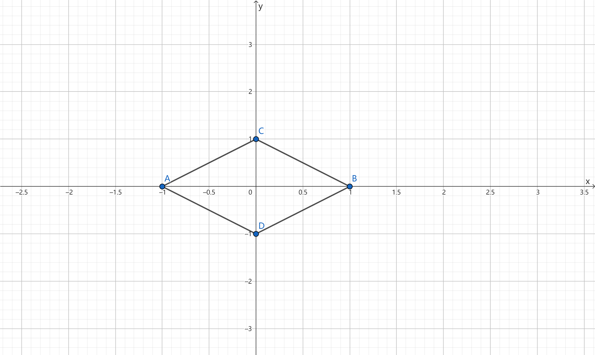
D关于x轴对称，D=D上+D下，f(x,y)=x2+x3y4，f(x,−y)=x2+x3y4
I=2∬D上(x2+x3y4)dσ=2∬D上x2dσ+2∬D上x3y4dσ=4∬D1x2dσ+0=4∬D1x2dσ,得证
-
化简 ∬D(xy+cosxsiny)dxdy，其中 D:(−1,1),(1,1),(−1,−1) 围成的三角域
解：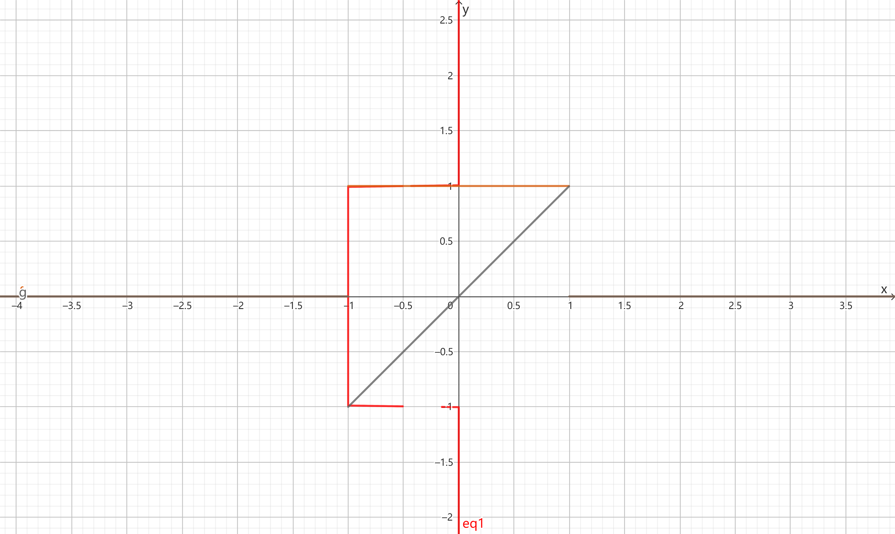
设 y=−x 将该区域从右上到左下分为四个 D1,D2,D3,D4 小三角形区域
I=∬Dxydxdy+∬Dcosxsinydxdy=∬D1+D2xydxdy+∬D3+D4dxdy+∬D1+D2cosxsinydxdy+∬D3+D4cosxsinydxdy=2∬Dcosxsinydxdy
-
证明 ∬Dsin(x−y)dσ=0，其中 D:0≤x≤1,0≤y≤1
证：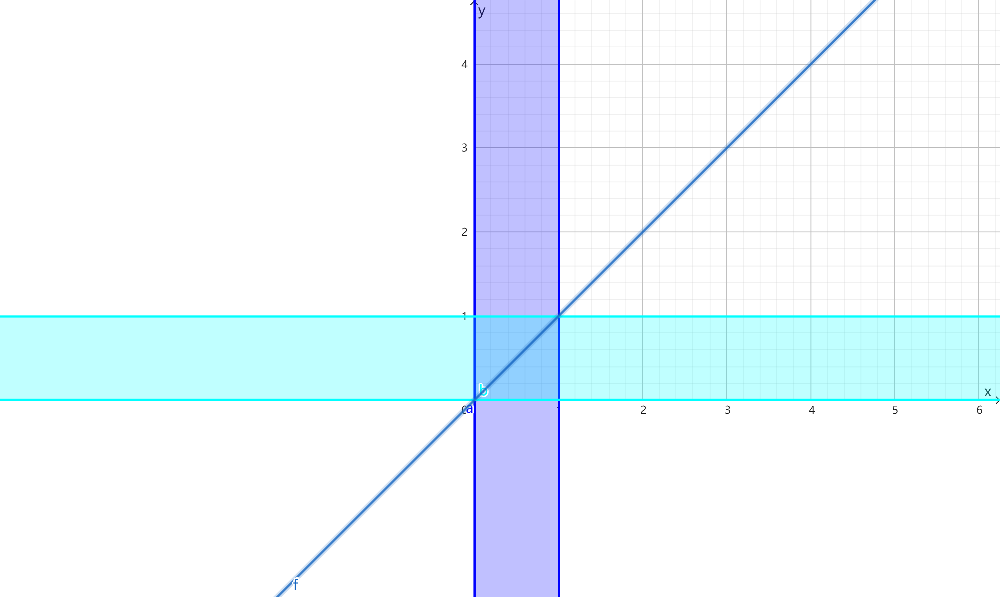
I=∬Dsin(x−y)dσ=∬Dsin(y−x)dσ=−∬Dsin(x−y)dσ=−I
I=0，得证
例2. 估值定理
估计 ∬D(x2+4y2+9)D:x2+y2≤4 的值
解：讨论 f(x,y)=x2+4y2+9 在 x2+y2≤4 的最值
设 L(x,y,λ)=x2+4y2+9+λ(x2+y2−4)
⎩⎨⎧Lx=2x+2λx=0Ly=8y+2yλ=0x2+y2=4
解得 {x=2y=0 或 {x=0y=2，f(2,0)=13，f(0,2)=25
驻点：
{fx=2x=0fy=8y=0
解得 {x=0y=0，f(0,0)=9
∴9≤f(x,y)≤25，36π≤I≤100π
例3. 积分中值定理
估计 r→0limπr21∬Dex2−y2cos(x+y)dxdyD:x2+y2≤r2 的值
解：I=eξ2−η2cos(ξ+η)πr2(ξ,η)∈D
原式 =r→0limeξ2−η2cos(ξ+η)=(ξ,η)→(0,0)limeξ2−η2cos(ξ+η)=1
如果 D′:x2+(y−1)2≤r2 呢？
原式 =r→0limeξ2−η2cos(ξ+η)=(ξ,η)→(0,1)limeξ2−η2cos(ξ+η)=ecos1